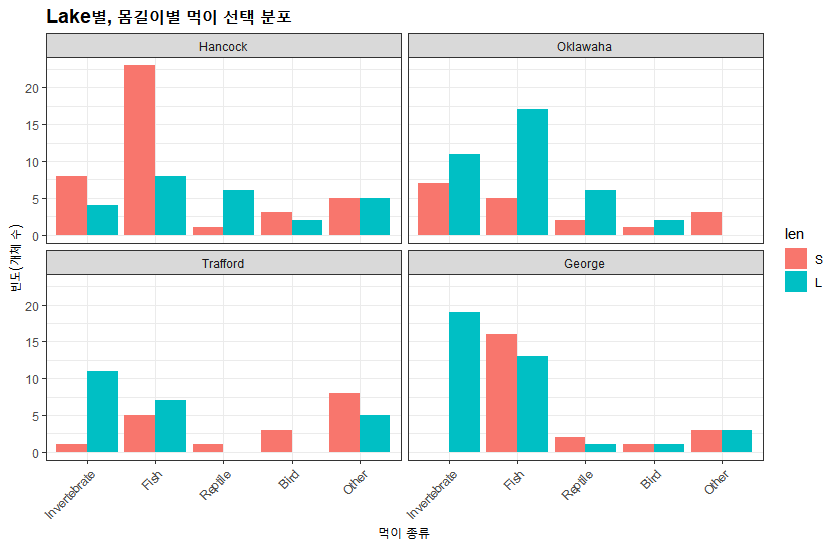
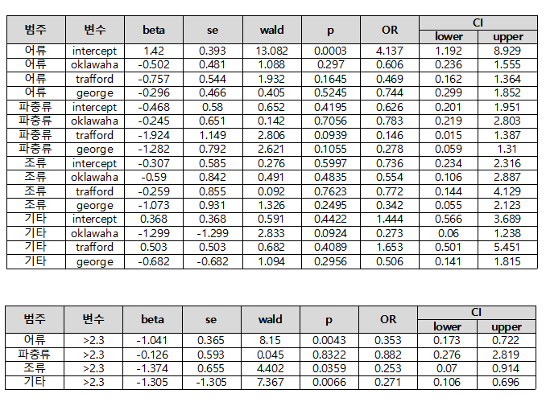
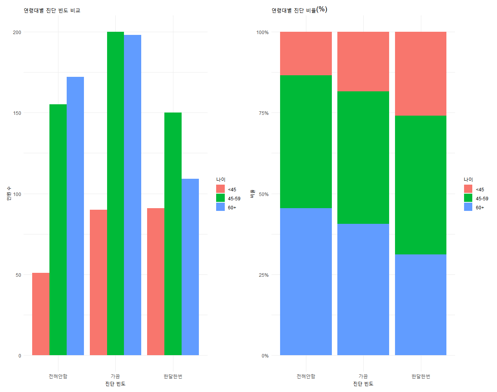
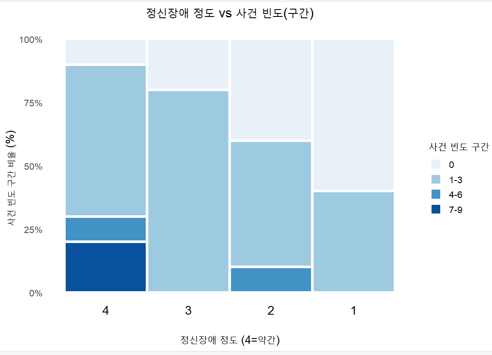

로짓 분석¶
3¶
연구문제¶
본 연구는 플로리다 주의 4 개 호수에 서식하는 악어의 주요 먹이 선택이 서식 호수와 악어의 몸길이가 미치는 영향을 다항 로짓 분석과 로짓 분석을 통해 파악하는 것을 목표로 하였다.
연구 가설설정¶
귀무 가설 : - 서식 호수와 몸 길이는 악어의 먹이 선택에 영향을 주지 않는다. 대립 가설 : - 서식 호수와 몸 길이는 악어의 먹이 선택에 영향을 준다.
데이터 설명¶
변수¶
반응 변수 : 선택한 먹이 (범주형/명목형) - 연체류 / 어류 / 파충류 / 조류 / 기타 설명 변수 1 : 서식 호수 (범주형/명목형) : Hancock / Olawaha / Trafford / George 설명 변수 2 : 몸 길이 (범주형/이분형) : <= 2.3(Small), >2.3(Large)
표¶
| lake | len | Food | value |
|---|---|---|---|
| Hancock | S | Fish | 23 |
| Hancock | L | Invertebrate | 4 |
| Oklawaha | S | Reptile | 2 |
| Oklawaha | L | Bird | 2 |
| Trafford | S | Other | 8 |
| Trafford | L | Fish | 7 |
| George | S | Invertebrate | 0 |
| George | L | Reptile | 1 |
| \(\vdots\) | \(\vdots\) | \(\vdots\) | \(\vdots\) |
| Hancock | S | Reptile | 1 |
| Hancock | L | Bird | 2 |
| Oklawaha | S | Other | 3 |
| Oklawaha | L | Fish | 17 |
| Trafford | S | Invertebrate | 1 |
| Trafford | L | Reptile | 0 |
| George | S | Bird | 1 |
| George | L | Other | 3 |
먹이 선택 분포를 보면, Oklawaha 와 Trafford 호수에서는 연체류 선택 비율이 상대적으로 높고, Hancock 과 George 호수에서는 어류선택 비율이 높은 경향을 볼 수 있다. 또한 몸길이가 작은 악어가 연체류를 더 많이 선택하는 경향이 보인다.
시각화¶

사용한 통계 분석법 및 근거¶
일반화 로짓 분석 수식¶
근거¶
반응변수인 주요 먹이 선택이 5 개 범주를 가진 명목형 변수이므로, 일반화 로짓 모형을 사용하였다. 이때 명목형 반응변수에서는 범주 간 순서가 없으므로 비례 오즈 가정이 필요 없는 일반화 로짓 모형이 적절하다.
분석 결과 및 해석¶
- 로짓 모형을 적합시켜 악어의 먹이 선택에 대한 서식 호수와 몸 길이의 효과를 설명하여라.
모형 적합도 검정¶
LRT 검정을 통해 일반화 로짓 모형에 적합도를 확인하였고 카이제곱(df=16) 분포를 따르는 검정통계량을 확인하였다. 검정통계량 값 437.50 , p-value < 0.001 이므로 현재 설계한 전체 모형이 절편만 있는 단순 모형보다 데이터를 잘 설명한다고 볼 수 있다.
모수 추정 결과¶

기준 범주를 연체류로 설정하였을 때 로짓 모형 방정식이다.
\(x_1\) : Oklawaha \(x_2\) : Trafford \(x_3\) : George \(x_4\) : Length (> 2.3)
연체류 - 어류¶
연체류 - 파충류¶
연체류 - 조류¶
연체류 - 기타¶
오즈 분석¶
| (Intercept) | lakeOklawaha | lakeTrafford | lakeGeorge | lenL |
|---|---|---|---|---|
| Fish | 4.1367 | 0.6055 | 0.4693 | 0.7435 |
| Reptile | 0.6263 | 0.7827 | 0.1460 | 0.2776 |
| Bird | 0.7356 | 0.5543 | 0.7720 | 0.3421 |
| Other | 1.4444 | 0.2728 | 1.6531 | 0.5056 |
결론¶
Hancock 호수의 연체류 대비 Oklawaha 호수의 어류 선택 오즈는 \(4.1367\) Hancock 호수의 연체류 대비 Oklawaha 호수의 파충류 선택 오즈는 0.6263 Hancock 호수의 연체류 대비 Oklawaha 호수의 조류 선택 오즈는 0.7356 Hancock 호수의 연체류 대비 Oklawaha 호수의 기타 선택 오즈는 1.4444
4¶
연구문제¶
본 연구는 여성의 유방암 자가 진단 횟수가 나이에 따라 어떠한 차이를 보이는지 파악하고자 한다. 진단 빈도는 "한 달에 한번", "가끔", "전혀 안함"의 3 가지 순서형 범주로 측정되었으며, 연령대는 45 세 미만, 45~59 세, 60 세 이상의 3 개 그룹으로 분류되었다.
연구 가설설정¶
귀무 가설 : - 연령대는 진단 빈도에 영향을 주지 않는다. 대립 가설 : - 서식 호수와 몸 길이는 악어의 먹이 선택에 영향을 준다.
데이터 설명¶
변수¶
반응 변수 : 연령대 (범주형/명목형) - 45세 미만 / 45 ~ 59세 / 60세 이상 설명 변수 1 : 진단 빈도 (범주형/순서형) : 전혀 안함 / 가끔 / 한달에 한번 설명 변수 2 : 몸 길이 (범주형/이분형) : <= 2.3(Small), >2.3(Large)
표¶
| 나이 | 한달에 한번 | 가끔 | 전혀 안함 | 합계 |
|---|---|---|---|---|
| <45 | 91 | 90 | 51 | 232 |
| 45~59 | 150 | 200 | 155 | 505 |
| 60+ | 109 | 198 | 172 | 479 |
| 총계 | 350 | 488 | 378 | 1216 |
시각화¶

사용한 통계 분석법 및 근거¶
비례 오즈 로짓 모형¶
누적 로짓 모형¶
근거¶
- 반응변수인 진단 빈도가 "전혀 안함 < 가끔 < 한 달에 한번"의 순서를 가진 순서형 범주 변수이고 이때에는 범주 간 순서 정보를 활용할 수 있는 비례 오즈 로짓 모형이 적절하다.
- 그리고 비례 오즈 가정이 만족되면 단일 오즈비로 연령대의 효과를 간단히 해석할 수 있다.
- 비례 오즈 가정 : 각 절단점(cutpoint)에서 설명변수의 효과(β)는 동일하며 절편(αⱼ)만 다르다.
분석 결과 및 해석¶
비례 오즈 가정 검정 (Brant Test)¶
| Test for | \(\chi^2\) | df | Probablilty |
|---|---|---|---|
| 45 ~ 59 | 0.71 | 2 | 0.7 |
| >60 | 0.68 | 1 | 0.41 |
| <45 | 0.02 | 1 | 0.88 |
p-value = 0.70 > 0.05 이므로 비례 오즈 가정이 만족된다. 각 연령대 변수별로도 모두 p-value > 0.05 로 비례 오즈 가정을 위배하지 않는다. 따라서 비례 오즈 로짓 모형을 사용하는 것이 적절하다.
모형 적합도 검정¶
LRT 검정을 통해 일반화 로짓 모형에 적합도를 확인하였고 카이제곱(df=2) 분포를 따르는 검정통계량을 확인하였다. 검정통계량 값 24.480 , p-value < 0.001 이므로 현재 설계한 전체 모형이 절편만 있는 단순 모형보다 데이터를 잘 설명한다고 볼 수 있다.
모수 추정 결과¶
기준 범주를 45세 미만 으로 설정했을때의 결과이다.
| Param | Estimate | Std. Erorr | z | p | OR | 95% CI |
|---|---|---|---|---|---|---|
| Inter:1 | -1.2829 | 0.1296 | -9.898 | < 0.001 | 0.277 | (0.215, 0.357) |
| Inter:2 | 0.4470 | 0.1244 | 3.594 | 0.0032 | 1.564 | (1.225, 1.995) |
| 45~59 | 0.4419 | 0.1474 | 2.998 | 0.0027 | 1.556 | (1.165, 2.077) |
| > 60 | 0.7315 | 0.1494 | 4.896 | < 0.001 | 2.078 | (1.551, 2.785) |
- \(\alpha_1(\text{전혀안함 | 가끔, 한달에 한번})\;=\;-1.2829\quad(SE=0.1296,z=-9.898)\)
- \(\alpha_2(\text{전혀안함 , 가끔 | 한달에한번})\;=\;0.4470\quad(SE=0.1244, z=3.594)\)
45세 부터 59세의 효과 (\(\beta_1=0.4419\))¶
- z = 2.998, p = 0.0027 으로 유의수준 0.05 에서 유의하다. 따라서 귀무가설을 기각한다. 또한 45 세 연령대에 비해 45세 부터 59세 연령대는 더 높은 진단 빈도 범주에 속할 오즈가 1.556 배이다.
60 세 이상 연령대의 효과 (\(\beta_2=0.7315\))¶
-
z = 4.896, p < 0.001 (유의함)
-
OR = 2.078, 95% CI (1.551, 2.785)
p 값이 0.05 보다 작으므로 유의하다. 따라서 귀무가설을 기각한다. 또한 45 세 미만 연령대에 비해 60 세 이상 연령대는 더 높은 진단 빈도 범주에 속할 오즈가 2.078 배이다.
결론¶
유의 수준 5% 하에서 연령대는 유방암 자가 진단 빈도에 유의한 영향을 미친다. 젊은 연령대일수록 정기적인 자가 진단을 수행할 확률이 높다.
5¶
연구문제¶
본 연구는 정신장애의 정도가 사회경제적 지위와 지난 3 년간 경험한 중요한 생활 사건(자녀출생, 이혼, 가족의 죽음, 새 직업 등)의 수에 따라 어떻게 달라지는지를 순서형 로짓 분석을 통해 파악하고자 한 연구이다.
연구 가설설정¶
사회 경제적 지위 가설 설정¶
귀무 가설 : - 사회경제적 지위는 정신장애 정도에 영향을 주지 않는다. 대립 가설 : - 사회경제적 지위는 정신장애 정도에 영향을 준다.
사건 가설 설정¶
귀무 가설 : - 사건의 수는 정신장애 정도에 영향을 주지 않는다. 대립 가설 : - 사건의 수는 정신장애 정도에 영향을 준다.
데이터 설명¶
변수¶
반응 변수 : 사회경제적 지위 (범주형/이분형) - 1 : 높음 / 0 : 낮음 설명 변수 1 : 생활 사건 (양적/이산형) : 0~9: 지난 3 년간 경험한 중요한 사건의 수 설명 변수 2 : 정신장애 정도 (범주형/순서형) : 1: 중증 / 2: 보통 / 3: 경증 / 4: 약간
표¶
| 정신장애 정도 | 사회 경제적 지위 높음 | 사회 경제적 지위 낮음 | 합계 |
|---|---|---|---|
| 약간(4) | 8(36.4%) | 4(22.2%) | 12 |
| 경증(3) | 8(36.4%) | 4(22.2%) | 12 |
| 보통(2) | 2(9.1%) | 5(27.8%) | 7 |
| 중증(1) | 4(18.2%) | 5(27.8%) | 9 |
| 총계 | 22 | 18 | 40 |
사회경제적 지위가 높은 경우 정신장애 정도가 약간, 경증에 72%를 넘는 비율을 가지고 있었으며 반대로 낮은 경우에는 정신장애 정도가 보통, 중증에 54%를 넘는 비율을 가지고 있었다.
시각화¶

정신장애 정도가 약간일 경우 사건빈도가 1-3 으로 적었으며 중증으로 갈수록 사건의 빈도수가 많은 케이스가 늘어나는 경향을 보였다.
사용한 통계 분석법 및 근거¶
비례 오즈 로짓 모형¶
누적 로짓 모형¶
누적 확률¶
근거¶
- 반응변수인 정신장애 정도가 순서가 있는 4 개 범주 (1=중증, 2=보통, 3=경증, 4=약간)를 가진 순서형 변수이므로 비례오즈 로짓 모형이 가장 적절하다.
- 비례오즈 모형은 범주 간 순서 정보를 활용하면서도 각 범주 경계에서 설명변수의 효과가 일정하다는 비례 가정을 통해 효율적인 추정이 가능하다.
분석 결과 및 해석¶
비례 오즈 가정 검정 (Brant Test)¶
| Test for | \(\chi^2\) | df | Probablilty |
|---|---|---|---|
| 전체 | 2.13 | 4 | 0.71 |
| 사회경제적 지위 | 1.25 | 2 | 0.53 |
| 사건의 빈도 수 | 0.22 | 2 | 0.9 |
비례오즈 가정 검정 결과, 모든 p-value > 0.05 로 비례오즈 가정이 만족된다. 즉, 각 범주 경계에서 설명변수의 효과가 일정하다는 가정이 성립하므로 비례오즈 로짓 모형을 사용하는 것이 적절하다.
모형 적합도 검정¶
LRT 검정을 통해 일반화 로짓 모형에 적합도를 확인하였고 카이제곱(df=2) 분포를 따르는 검정통계량을 확인하였다. 검정통계량 값 9.9442 , p-value = 0.006929 이므로 현재 설계한 전체 모형이 절편만 있는 단순 모형보다 데이터를 잘 설명한다고 볼 수 있다.
모수 추정 결과¶
기준 범주를 약간으로 설정했을때의 결과이다.
| Param | Estimate | Std. Erorr | z | p | OR | 95% CI |
|---|---|---|---|---|---|---|
| Inter:1 | -2.2094 | 0.7171 | -3.081 | 0.00206 | 0.110 | (0.027, 0.448) |
| Inter:2 | -1.2128 | 0.6511 | -1.863 | 0.06251 | 0.297 | (0.083, 1.065) |
| Inter:3 | 0.2819 | 0.6231 | 0.452 | 0.65096 | 1.326 | (0.391, 4.495) |
| socio | -1.1112 | 0.6143 | -1.809 | 0.07045 | 0.329 | (0.099, 1.097) |
| event | 0.3189 | 0.1194 | 2.670 | 0.00759 | 1.376 | (1.088, 1.738) |
사회 경제적 지위의 효과 (\(\beta_1=-1.1112\))¶
- z = -3.081, p-value > 0.05 (유의하지 않음)
- OR = 0.32, 95% CI (0.099, 1.097)
사건 변수를 고정했을 때, 사회경제적 지위가 높은 사람이 낮은 사람에 비해 더 약한 정신장애 범주에 속할 누적 오즈가 0.32 배이다. 그러나 p-value 가 0.05 보다 크고 신뢰구간이 1 을 포함하므로, 사회경제적 지위는 정신장애 정도에 통계적으로 유의한 영향을 미치지 않으며 귀무가설을 기각하지 못한다.
사건의 효과 (\(\beta_2=-0.3189\))¶
- z = 2.670, p-value = 0.00759 (유의함)
- OR = 1.376 , 95% CI (1.088, 1.738)
사회경제적 지위를 고정했을 때, 사건이 1 건 증가할 때마다 더 약한 정신장애 범주에 속할 누적 오즈가 1.376 배 증가한다. 신뢰구간이 1 을 포함하지 않으므로 사건의 수는 정신장애 정도에 통계적으로 유의한 영향을 미치고 귀무가설을 기각한다.
- \(\alpha_1(\text{중증 | 보통, 경증, 약간})\;=\;-2.2094\quad(SE=0.7171,z=-3.081)\)
- \(\alpha_2(\text{중증 , 보통 | 경증, 약간})\;=\;-1.2128\quad(SE=0.6511,z=-1.863)\)
- \(\alpha_3(\text{중증 , 보통, 경증 | 약간})\;=\;0.2819\quad(SE=0.6231,z=0.452)\)
결론¶
-
사회경제적 지위는 정신장애 정도에 통계적으로 유의한 영향을 미치지않는다 유의수준 5%하에서 귀무가설을 기각 하지 못했다.
-
사건의 수는 정신장애 정도에 통계적으로 유의한 영향을 미친다 경험한 중요한 사건이 1 건 증가할 때마다 더 약한 정신장애 범주로 갈 오즈가 1.376 배 증가한다.